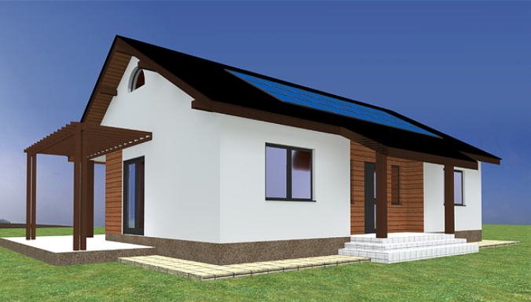
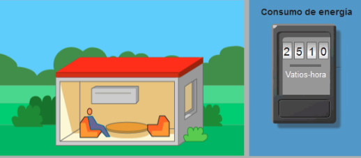
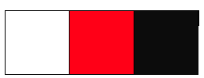
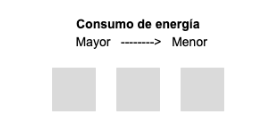
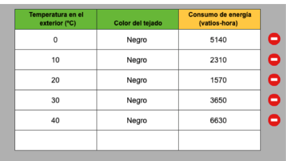
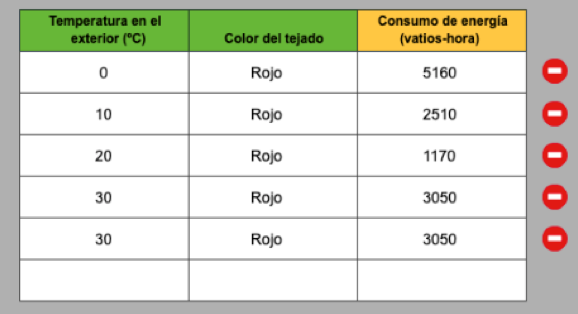
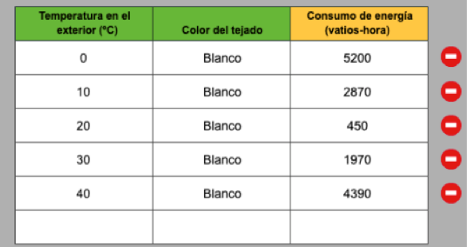
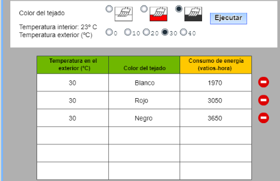
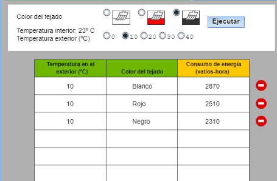

Casas inteligentes: ítem de PISA
¿Cómo serán las casas del futuro? La unión Europea se ha propuesto reducir el consumo energético de los edificios.
Para reducir el gasto energía en una casa hay diferentes métodos: a través de la orientación de la vivienda, la distribución, los materiales de construcción y todo lo que se haga para evitar que tengamos que enchufar la calefacción en invierno, y el aire acondicionado en verano o la luz.

¿Nos atrevemos a diseñar nuestra casa del futuro, nuestra casa de bajo consumo energético? Vamos a investigar con esta pregunta de PISA, cómo ahorrar energía y disminuir los gases de efecto invernadero diseñando una casa inteligente.
Ítem extraído de: Ciencias en PISA, pruebas liberada. Instituto de Evaluación. Ministerio de Educación. 2015.
Casas de bajo consumo
- Duración:
- Una sesión
- Agrupamiento:
- Individual, pequeño y gran grupo
En esta tarea investigaremos como diseñar el tejado de una casa de bajo consumo, investigando diferentes colores de tejado y su comportamiento frente al ahorro de energía. Para ello utilizaremos una pregunta de Pisa qué nos da la opción de utilizar una simulación. Realizaremos las actividades individualmente y cotejaremos las respuestas en el grupo, y finalmente realizaremos un debate con las conclusiones obtenidas, entre todos los grupos de la clase.
¡Empecemos a investigar!
Características de nuestra casa de bajo consumo
Existe un creciente interés en todo el mundo por la construcción de casas de bajo consumo. Al reducir el consumo de energía, los propietarios ahorran dinero y disminuyen las emisiones de gases de efecto invernadero a la atmósfera. Los arquitectos usan simulaciones para investigar qué efecto tendrán en el consumo de energía las decisiones tomadas al diseñar la casa.

En esta simulación permite estudiar cómo los diferentes colores del tejado influyen en el consumo de energía. Una parte de la radiación solar se refleja al chocar contra el tejado. Otra parte de la radiación solar se absorbe y calienta la casa.
La casa de la pregunta-simulación consume energía en calefacción y en refrigeración, con el fin de mantener el interior a la agradable temperatura de 23ºC aunque la temperatura exterior oscile.
- NOTA: la energía consumida se mide en vatios-hora. Un vatio-hora es igual a un vatio de potencia suministrada durante una hora
En nuestra investigación realizaremos cuatro actividades, que en un principio haremos sin simulación y posteriormente comprobaremos con la simulación, finalmente realizamos una quinta actividad para debatir nuestras respuestas y conclusiones.
Actividad 1
|
1.-Se va a construir una casa en una zona con un clima muy caluroso, con temperaturas exteriores que superan los 40 ºC. Te han pedido que ayudes a decidir qué color de tejado es el más adecuado para estas casas.  |
||||||||||||||||||||||||
|
1.1.-Ordena los tres colores de tejado por consumo decreciente de energía, para una casa que se ha de mantener a 23 ºC, en un clima muy caluroso.  *Utiliza la siguiente tabla para dar tu respuesta
Tabla |
||||||||||||||||||||||||
|
1.2.-Selecciona tres filas de la tabla que corroboren tu respuesta
Tabla |
||||||||||||||||||||||||
|
|
||||||||||||||||||||||||
Actividad 2
|
2.-Cuando la temperatura exterior es de 10 ºC ¿Qué diferencia hay en el consumo de energía entre una casa con tejado blanco y una casa con tejado negro? 2.1.-Elige la respuesta adecuada:
|
||||||||||||||||||||||||
|
2.2.-Selecciona dos filas de datos de la tabla que corroboren tu respuesta
Tabla |
||||||||||||||||||||||||
|
2.3.-Explica la diferencia de consumo de energía describiendo qué ocurre a la radiación solar al chocar con tejados de estos dos colores diferentes
|
||||||||||||||||||||||||
Actividad 3 y 4
Actividad 5 : Conclusión y debate
Una vez acabada la actividad, el profesor o profesora nos facilitará las respuestas correctas, las cotejamos y las comprobamos con la simulación y realizamos un debate.
Para realizar el debate tendremos en cuenta las siguientes preguntas, primero las pesamos en el grupo pequeño y luego las debatimos en el grupo de clase.
Cuatro cuestiones para el debate:
Cuestión 1
Si queremos mantener la temperatura interior de la casa a 23 ºC. ¿Por qué con el color de tejado negro primero a temperaturas bajas disminuye el consumo de energía y al aumentar la temperatura exterior aumenta el consumo de energía?

Cuestión 2
¿Cuál es efecto del color blanco, para mantener la temperatura interior de la casa en 23 ºC? ¿Cómo varia el consumo de energía? ¿Pasaría lo mismo con el tejado rojo?
Definición del término
 |
 |
Cuestión 3
Para climas calientes, más de 20 ºC ¿Cuál seria nuestro consejo en cuanto al color del tejado a elegir? ¿Por qué?

Más de 20ºCCuestión 4
Para climas fríos, menos de20ºC ¿Cuál seria nuestro consejo en cuanto al color del tejado a elegir? ¿Por qué?

Menos de 20ºC
Una vez finalizada la actividad, hacemos un pequeño debate en clase con estas cuestiones. Primero las pensamos individualmente:
- He contestado todas las preguntas.
- Donde he tenido mas dificultad y ¿por qué?
- He entendido todos los textos.
- He comprendido el significado de utilizar diferentes materiales para contribuir al ahorro de energía.
- Entiendo la relación entre consumo de energía y emisiones de gases contaminantes a la atmósfera.
Evaluación y reflexión
Una vez que hemos finalizado la tarea, es un buen momento para reflexionar en nuestro diario de aprendizaje. Algunas sugerencias pueden ser:
- ¿Qué he aprendido?
- ¿Qué me ha sorprendido más de todo el proceso? ¿Por qué?
- ¿He cambiado alguna idea previa? ¿Cuál?
- ¿Qué me ha resultado más difícil? ¿Por qué?
Evaluación
1.-La tarea se evalúa con la siguiente escala genérica de evaluación de debates sobre ciencias (descargar en formato editable odt y en pdf):
.png)
2.-Para evaluar emplearemos la siguiente escala: Escala de valoración para simulaciones digitales de ciencias (descarga en formato editable, odt, y en pdf ):